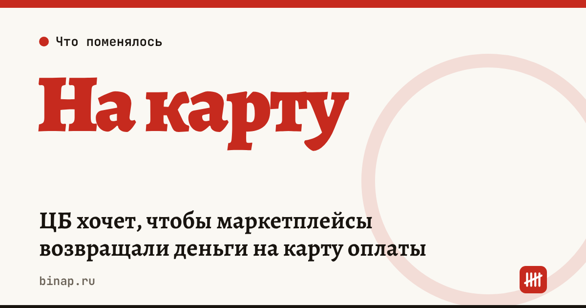

ЦБ хочет, чтобы маркетплейсы возвращали деньги на карту оплаты

Банк России предложил законодательно обязать маркетплейсы возвращать покупателям деньги на то же средство платежа, которым они платили, — например, на карту. Это пока предложение, а не закон: по данным «Коммерсанта», инициатива направлена в Минэкономразвития. Продавцам менять ничего не нужно, но возвраты стоит заранее учесть в кассовом плане.
Коротко
- Правило хотят закрепить для цифровых платформ при безналичных расчётах; исключение — покупатель сам указал другую карту или счёт.
- Поводом названы возвраты на анонимные кошельки в дочерних банках платформ: по данным источников, остаток там не более 15 000 ₽, операции — до 40 000 ₽ в месяц.
- ЦБ также предлагает распространить на платформы правила продажи финансовых продуктов и включить их в периметр своего надзора.
- Сроков вступления нет: нужны изменения в законах.
Сроки, изменения и разборы для ИП и самозанятых — каждое утро в Telegram и MAX. Подпишитесь, чтобы не пропустить.
Что это значит
Для покупателей. Возврат не будет «застревать» на кошельке, деньги с которого можно только потратить на той же площадке.
Для продавцов. Ваша бухгалтерия не меняется — меняется поведение площадки. Если закон примут, площадки могут пересмотреть сроки и порядок возвратов, и об этом они сообщат продавцам сами.
Что не меняется. Ваши обязанности по возврату товара и денег по закону о защите прав потребителей остаются прежними.
Сколько денег «висит» в возвратах
Формула (расчёт редакции): доля возвратов = сумма возвратов за месяц ÷ выручка за месяц × 100%.
| Выручка за месяц | Возвраты за месяц | Доля возвратов |
|---|---|---|
| 500 000 ₽ | 25 000 ₽ | 5% |
| 500 000 ₽ | 60 000 ₽ | 12% |
Условный пример. Если доля возвратов растёт, это повод разобрать причины: размер, описание, качество упаковки — как это сделать, в статье анализ возвратов с нейросетью.
Что сделать сейчас
- Откройте оферту площадки и найдите разделы о возвратах и о сроках расчётов с продавцом.
- Посчитайте долю возвратов по формуле выше за последние три месяца.
- Заложите возвраты в кассовый план: деньги за возвращённый товар площадка удержит из будущих выплат. Если выплаты к тому же задерживаются, держите запас — см. что делать, если маркетплейс задержал выплату.
- Следите за уведомлениями площадки: об изменении условий она обязана сообщать продавцам.
Какие правила для площадок и продавцов уже действуют — в разборах закон о платформах с 1 октября и проверки продавцов и передача данных в ФНС.
Частые вопросы
Это уже закон? Нет. ЦБ направил предложение в Минэкономразвития, решения пока нет.
Что за анонимные кошельки? По данным источников, это кошельки в дочерних банках платформ: остаток не более 15 000 ₽, операции до 40 000 ₽ в месяц, вывести деньги без идентификации нельзя.
Нужно ли продавцу что-то менять в договоре с покупателем? Нет. Возврат денег покупателю проводит площадка; продавцу важно учитывать удержания за возвраты в своих расчётах.